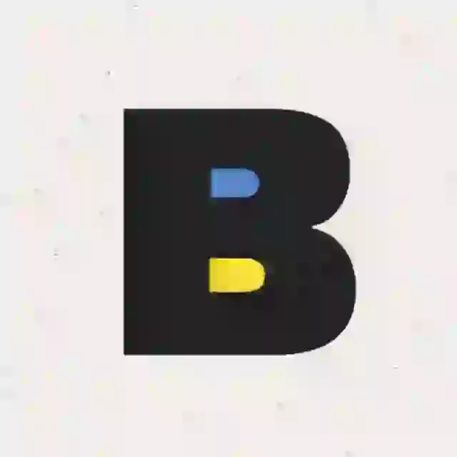
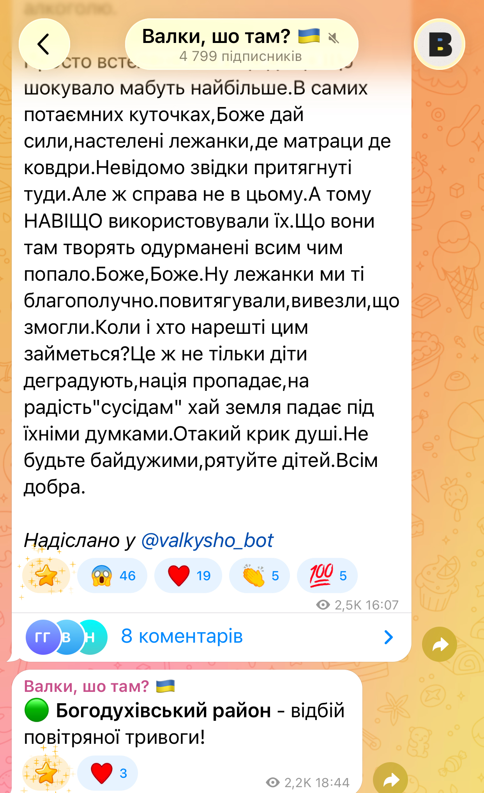
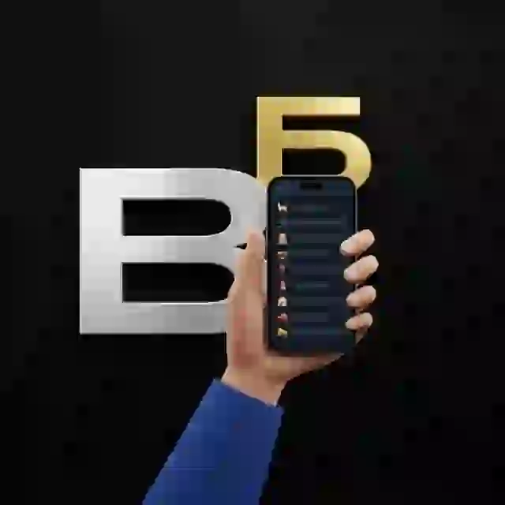
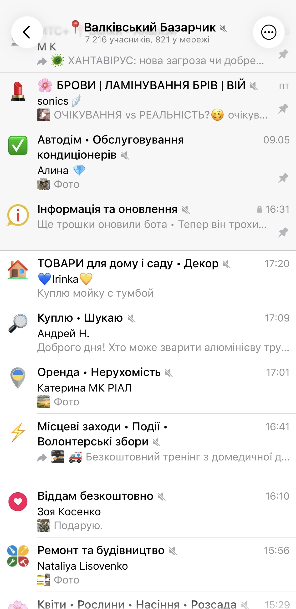
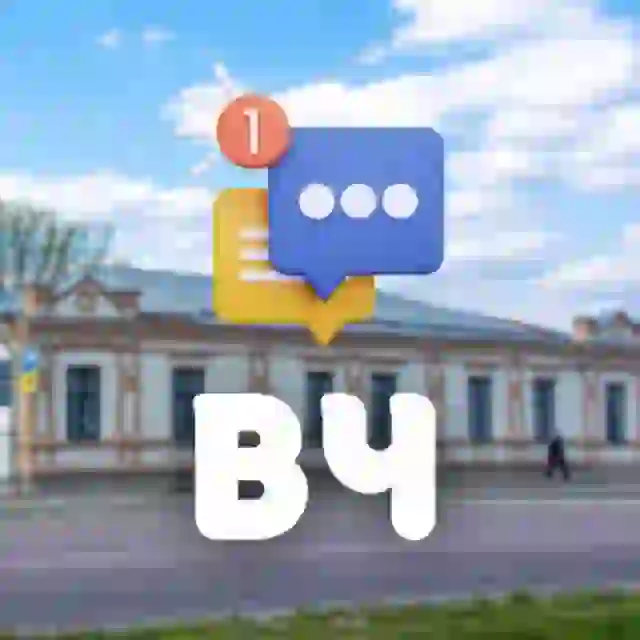
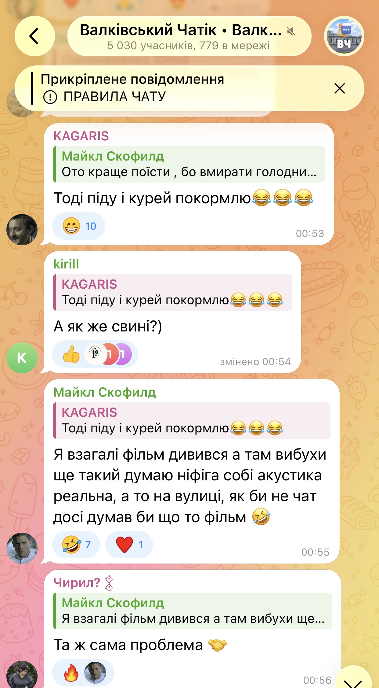
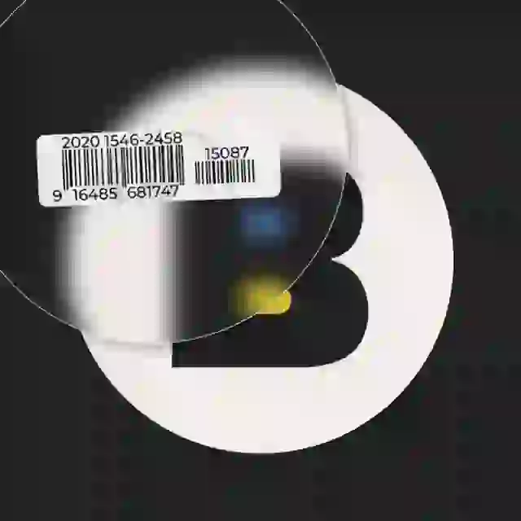
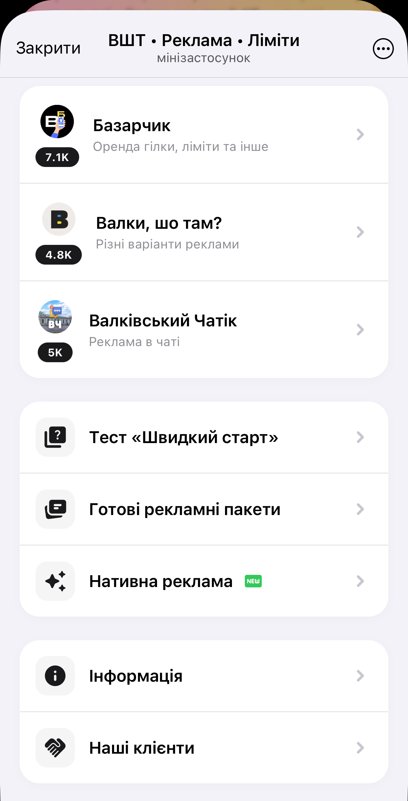

Якщо ви живете у Валківській громаді і вас немає в цих трьох спільнотах — ви, скоріше за все, живете в інформаційному вакуумі. Розбираємось, чим живе валківський телеграм.

Моментальні сповіщення про тривоги по Богодухівському району, відбої та попередження про люті грози і град (щоб встигнути накрити помідори).
Це не прилизаний вісник міськради. Тут через бота @valkysho_bot люди публікують свої пости про реальні проблеми міста. Наприклад, нещодавній резонансний крик душі про знайдені в ДК «лежанки» зі шприцами, фольгою та упаковками від таблеток.

Читати новини
Забудьте про хаотичні вайбер-чати, де повідомлення про продаж поросят губляться між листівками з добрим ранком. «Валківський Базарчик» — це велика супергрупа, яка працює як швейцарський годинник.
Чому це найзручніша барахолка регіону:
Можливості для місцевого бізнесу і підтримка ЗСУ:
Місцеві підприємці можуть публікувати багато реклами та орендувати цілі гілки для свого бізнесу. Але найкрутіше — оплатити це все вони можуть прямими донатами на актуальні волонтерські збори для ЗСУ.

Перейти на Базарчик
Якщо канал з новинами ви просто читаєте, а на Базарчику купуєте і продаєте, то Валківський Чатік — це місце, де можна поговорити, дізнатися, чи є зараз світло в центрі, спитати, хто сьогодні приймає в лікарні або просто зачепитися язиками в коментарях про якусь глобальну зраду чи місцеві проблеми.
Модерація адекватна, тому відвертого трешу там немає, але й нудьгувати не доводиться.

Приєднатися до Чатіку
Хочете просунути свої послуги чи товари на всю громаду? Це наш зручний міні-додаток для локальних рекламодавців.

Відкрити додаток